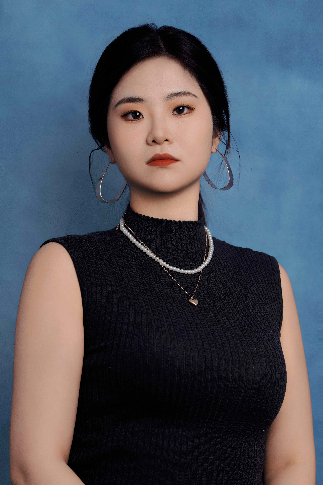

Terentia
Jia Yibo
Master In Asean Studies
Asia-Europe Institute.UM
Email: 15269280197@139.com (Prefer)
Email: terentia.yibo@gmail.com


|  | TerentiaJia Yibo Email: 15269280197@139.com (Prefer) Email: terentia.yibo@gmail.com
|
I hold a Master’s degree in ASEAN Studies from the University of Malaya (QS ranking 60), where I graduated with distinction (GPA 3.89/4).
My studies, supervised by Professor Fumitaka Furuoka , focused on Southeast Asian regionalism, political economy, and security,
and I developed strong qualitative research skills through coursework such as ASEAN and Economic Integration, The Making of
Modern Southeast Asia, and Political Economy of Asia-Europe Relations.
My academic journey is deeply shaped by my cross-cultural and interdisciplinary experiences.
I come from China and have lived and studied in Malaysia, while also conducting research on China’s
foreign aid in Cambodia. My master’s thesis explored the moral dimensions of China’s Belt and Road
Initiative projects through qualitative interviews, which sharpened my interest in how ethics and power
intersect in international development and technological systems.
In addition to my studies, I’ve worked in international education organizations, where I managed
collaborative programs and educational projects between Chinese and foreign institutions. This has given
me first-hand experience navigating multilingual environments and coordinating across cultural boundaries—skills
I now bring into my research practice.
As artificial intelligence and robotic technologies become increasingly embedded in
everyday life—not only in industry or healthcare, but also in homes and intimate spaces—I have
become deeply curious about how these innovations are reshaping our social world. My academic background
in Southeast Asian studies, paired with my interest in ethics and human relationships, naturally led me
to question how technologies like domestic robots might influence care work, gender roles, and emotional
labor within families. This shift in focus grew organically from my previous research on moral responsibility
and foreign aid, as I began to see parallels in how power, design, and values are embedded in both development
projects and intelligent machines.
These experiences have prepared me to explore how emerging technologies like domestic robots
affect everyday life, especially in terms of social relationships, care, and responsibility.
I am excited to apply design ethnography and feminist perspectives to better understand the lived
experiences and social impacts of human–robot interaction in the home.
Human–Robot Interaction; Feminist Technology Studies; Moral Realism in Foreign Aid; Domestic Robotics and Care; Cross-cultural Technology Use; ASEAN Regionalism and Social Impact; Migration and Human Security
STAGC: Attribute Graph Clustering Driven Cell Map of Single Cell Spatial Transcriptome
First author, under reviewing
STAGC is a graph-based self-encoder clustering algorithm developed for spatial transcriptomics data.
It introduces a self-training mechanism using soft labels from the graph embedding to refine clustering results iteratively.
It also leverages gene expression similarity within spatial thresholds rather than relying solely on Euclidean distance.
We also experimented with different methods to explore tumor microenvironments at single-cell resolution, including PCA, GNNs, and neighborhood-based feature fusion strategies.
| • Programming: Rapid Ai, cudf, R, Matlab, Python {Pytorch, Tensorflow, Pyg, Scanpy, Pandas, Numpy, sklearn}. |
| • Tools LATEX, Linux, Anaconda, Git, Docker, Abode Illustrator, HTML. |
1. The third prize of "Chinese college students' engineering training ability competition--UAV" (2021-2022) |
| 2. The second prize of "Chinese college students' engineering training ability competition--Automatic Tracking Vehicle" (CETC) (2021-2022) |
| 3. The first prize of “Chinese University Student Innovation Capacity Competition" (2020-2021) |
| 4. Shijiazhuang Tiedao University "Most Beautiful College Students"Scholarship (2020-2021) |
Copyright© 2020~2025 Lujiae Guo.